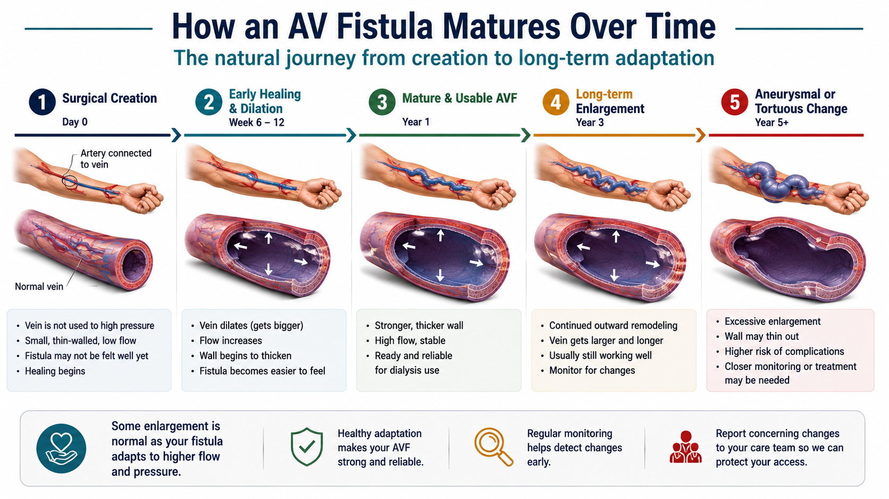
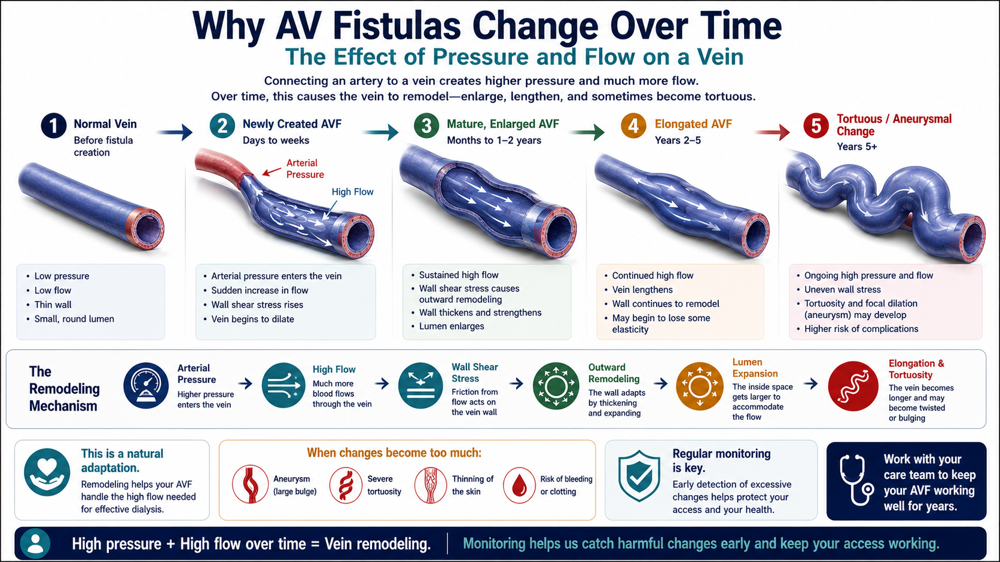
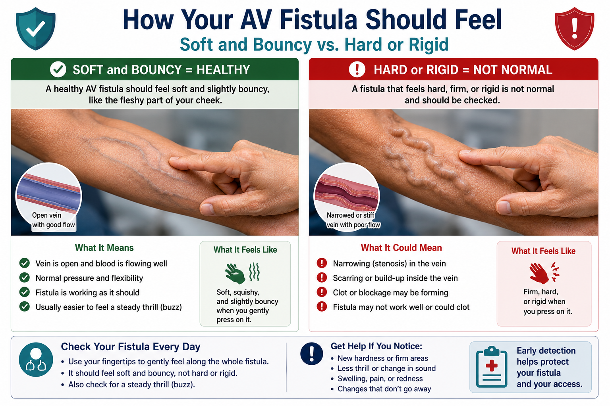
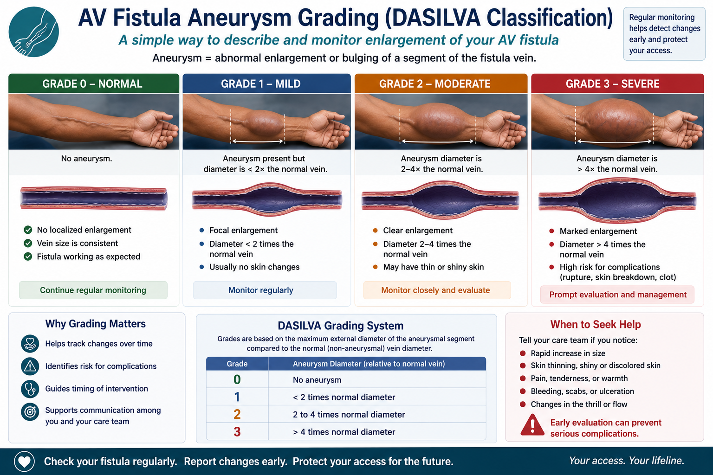
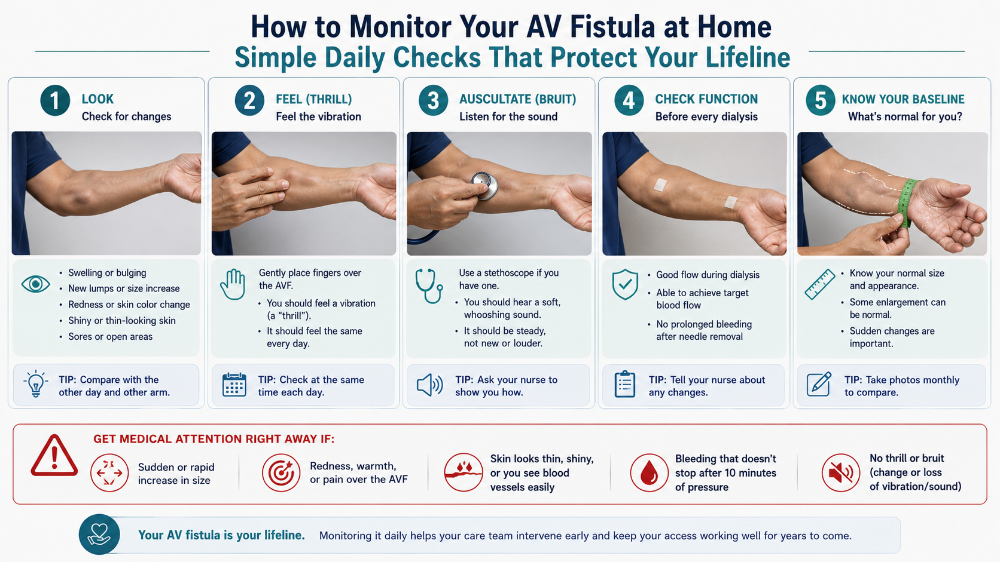
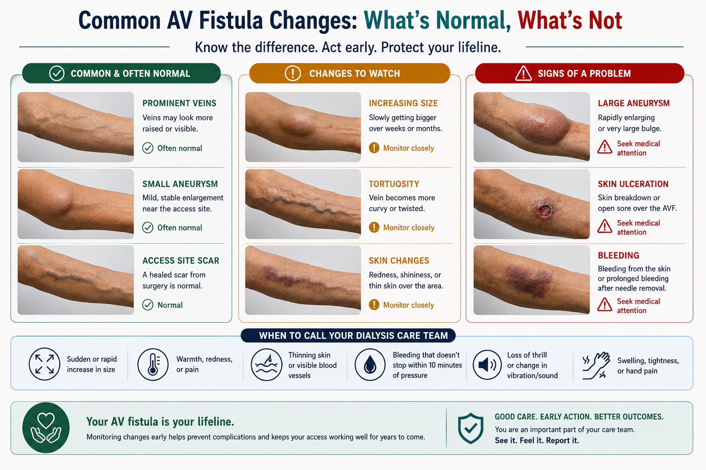
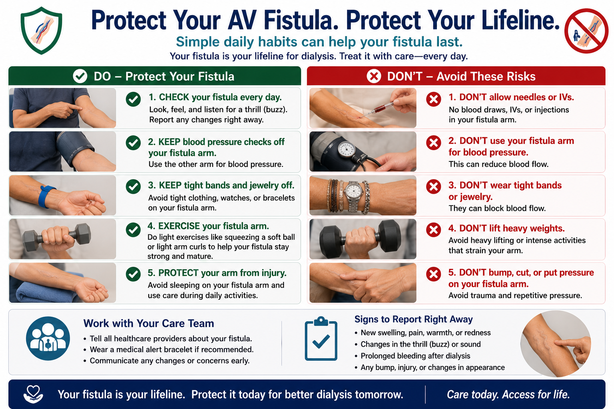

Welcome. If you have been on dialysis for several years, your fistula has changed. It is bigger, perhaps twistier, with hard and soft areas you can feel under the skin. This guide explains why — in plain language — and what to watch for so we can keep it working for many more years.
The Living Fistula: How an AVF Is Born and How It Matures
A fistula begins as a surgical decision. Your vascular surgeon connects an artery (which carries blood under high pressure) to a nearby vein (which normally carries blood under very low pressure). The moment the two are joined, the vein is exposed to forces it was never designed to handle — pressures up to fifty times what it has carried for your whole life.
The vein responds. It does not stay still. Within hours, the inner lining of the vein begins to sense the new flow. Within days, the wall starts to thicken. Within weeks, the lumen — the space inside through which blood travels — widens. This whole process is called outward remodeling, and it is the body's way of saying: "I will become strong enough to carry this load."
We call the early phase maturation. A useful rule that vascular surgeons follow is the rule of 6s: by six weeks after surgery, the vein in the cannulation segment should be at least 6 millimetres wide, no deeper than 6 millimetres from the skin, and carrying a flow of at least 600 millilitres per minute. When all three are reached, your fistula is mature enough to be needled safely for dialysis.
But maturation does not stop at six weeks. It continues for months and years. After five years of dialysis, your fistula often looks nothing like it did at creation. It is larger, sometimes much larger. Parts of it may bulge. Parts may feel firmer. The course of the fistula under your skin may have curved or coiled. This is not failure — it is the long-term result of carrying arterial-level blood through what was originally a thin-walled vein.
The driver of all this change is wall shear stress — the friction your blood creates as it slides along the inner wall. Think of a river: the faster the water flows, the more it shapes the banks. Your fistula is the river. Your vein wall is the bank. Year after year, the flow shapes the wall.

Why AVFs Grow Gigantic: The Biology of Long-Term Venous Arterialization
Think about the math. Three sessions per week, four hours per session, for five years equals roughly 3,000 hours of arterial-pressure flow through a vein. The vein is constantly being asked to dilate, to remodel, to accommodate. Over years, this repeated signal pushes the wall toward larger and larger diameters. This is why your fistula is bigger today than it was at year one.
Some patients dilate more than others. The strongest risk factors for excessive enlargement are:
- Uncontrolled hypertension — higher pressure means more force on the wall.
- Proximal access — upper-arm fistulas tend to carry higher flows than forearm fistulas, so they dilate more aggressively.
- Naturally high-flow AVFs — some fistulas carry 1.5 to 2 litres of blood per minute, and over years that volume forces continuous outward remodeling.
- Large surgical anastomosis — a wider connection at creation allows more flow from day one.
- Genetic and inflammatory factors we still do not fully understand.
It is important to distinguish physiologic enlargement — gradual, uniform widening of the whole fistula course, with intact skin — from pathologic aneurysmal change, which is more localized, faster-growing, and may threaten the skin overlying a particular bulge. Physiologic enlargement is normal and expected. Pathologic change requires attention.

The Hard Areas: What Creates Stiffness and Fibrosis
When you feel along your fistula, some areas are firm — almost like a small rope or ridge under the skin. These hard areas come from several layered processes that all share one theme: injury followed by scarring.
Each time a needle enters your fistula — three times a session, two needles per session, hundreds of sessions per year — there is a tiny injury to the wall. Inflammation arrives to heal it. Repair cells called myofibroblasts arrive, deposit collagen, and leave behind a small scar. Multiplied over years, these scars become palpable as a firm zone along the needling track.
Beyond needling, the inside of the vessel wall responds to flow with a process called intimal hyperplasia. Plain language: the cells that line the inside of your fistula multiply and thicken. Imagine a callus forming on the inside of the vessel. This callus narrows the lumen and stiffens the wall. It is especially common at the junction where the artery and vein were originally joined — the juxta-anastomotic region — and at curves and bends along the fistula course.
Other contributors to hard segments:
- Mural thrombus — small clots that stick to the wall and organize into fibrotic cords over time.
- Calcification — calcium deposits in the vessel wall, common in people with long-standing kidney disease because phosphate, calcium, and parathyroid hormone are difficult to balance.
There is a useful paradox to remember: hard areas are often the most narrowed but the least likely to rupture. The scarring itself acts as reinforcement. The areas that worry vascular specialists are usually soft bulging areas, not the firm ones. That said, when a hard zone forms close to the anastomosis at the elbow or wrist, it often signals an inflow stenosis — a narrowing that is making your fistula work harder upstream. This is treatable, and your dialysis team should know about it.
The Soft Areas: Aneurysms, Pseudoaneurysms, and Pulsatile Pouches
The bulging soft pouches you feel along your fistula are not all the same thing, and the distinction matters.
True aneurysm
A true aneurysm is a widening of the fistula that involves all three layers of the vessel wall — the inner lining, the muscle layer, and the outer covering. It develops slowly over years. It is usually uniform, follows the course of the fistula, and is strongly pulsatile and "thrilling" when you press over it. Because all three wall layers are present, true aneurysms have some intrinsic strength, even when large.
Pseudoaneurysm
A pseudoaneurysm is different. It happens when a needle puncture creates a small defect in the wall that does not fully heal. Blood escapes through the defect into the surrounding tissue and forms a contained collection, walled off only by scar tissue and skin. There is no true vessel wall around a pseudoaneurysm — and that is what makes them more dangerous than true aneurysms of similar size. They tend to be more localized (think of a small balloon attached to a larger pipe by a narrow neck), and they often form at buttonhole needling sites, where the same hole is used session after session.
How to tell the difference (clinically)
- True aneurysm: smooth, gradual along the fistula course, pulsatile, has a thrill.
- Pseudoaneurysm: localized "pouch," sometimes with a palpable neck, less uniform, more concerning when growing rapidly.
The Da Silva grading system (patient-friendly version)
Vascular surgeons use a four-level grading system originally described by Da Silva:
- Type I — Diffuse dilation. The fistula is widened but there are no localized bulges. Skin is healthy. Monitor.
- Type II — Localized aneurysm. A pouch is present but the skin over it is intact. Monitor closely; intervention may be needed if it grows.
- Type III — Skin involved. The skin over the bulge is thinning, shiny, dark, or hair-bare. Threatened — needs urgent surgical review.
- Type IV — Skin broken or infected. Scab, eschar, ulcer, or active infection present. Emergency — needs same-day care.
When soft is dangerous. A soft area becomes dangerous when any of these appear: skin thinning to a glassy, shiny appearance; loss of hair over the bulge; dark, purple, or black discoloration; rapid increase in size; spontaneous pain at the site; or any scab, blister, or open wound. Any of these should prompt an immediate call to your dialysis centre.
One final note: when the venous outflow above your fistula is narrowed (called central or outflow stenosis), pressure backs up downstream. That elevated pressure can make the fistula segment proximal to it balloon outward more quickly than it otherwise would. This is one reason your vascular team will sometimes order a venogram or fistulogram even when the bulging segment itself looks straightforward.


Tortuosity: Why the Fistula Coils and Twists
Older fistulas often follow a coiled or S-shaped path under the skin. There is a geometric reason for this. As the fistula lumen widens — and the wall thickens — the vein lengthens as well. The vein has no rigid bone-tendon attachments holding it straight, so the extra length has to go somewhere. It curls.
At every bend, the flow becomes turbulent — meaning the blood does not move smoothly. Turbulent flow causes local injury, which causes local remodeling, which deepens the bend. The process feeds itself. This is why upper-arm fistulas, which have more "free length" in the arm tissue, tend to become more tortuous over years than forearm fistulas, which are anchored against bone.
Tortuosity has real clinical consequences:
- Cannulation becomes harder. Needling along curved segments is technically more difficult and infiltrations (leaks during needling) are more common.
- Kinking versus angulation matters. A gentle curve usually causes no flow disturbance. A sharp kink, especially with arm position changes, can choke flow and even thrombose the fistula.
- Surveillance is harder. A coiled fistula is more challenging to scan with ultrasound, and stenoses can hide inside the curves.
If a particular bend is causing repeated cannulation failures or you can feel flow changing with arm position, raise this with your dialysis team.
Surveillance: Reading Your Fistula
Your fistula tells you what is happening — if you know how to listen. The international standard set by the KDOQI Vascular Access Guidelines is a short physical exam by your dialysis nurse at every session and a more thorough exam at least monthly. You can do a simpler version at home every day.
Home self-monitoring: LOOK · FEEL · LISTEN
LOOK. Look at the skin over your fistula every day. Note anything new: redness, swelling, change in colour, new bulges, hair loss in a particular spot, shiny patches, blisters, scabs, or any sweat-like discharge. A small change one day may not matter; the same change persisting for several days is worth reporting.
FEEL. Place your fingers lightly along the entire length of the fistula. You should feel a continuous thrill — a soft, vibrating, buzzing sensation. The thrill should be present at the anastomosis, along the body of the fistula, and proximally. Any segment where the thrill becomes a sharp pulse instead of a continuous hum suggests a narrowing nearby. Loss of the thrill entirely is an emergency — your fistula may have clotted.
LISTEN. If you have a stethoscope (or use the bell of a doctor's stethoscope at the dialysis centre), the sound over a healthy fistula is a soft, continuous bruit — like a low whoosh that does not stop between heartbeats. A bruit that becomes high-pitched, pulsatile, or interrupted between heartbeats suggests a stenosis (narrowing) somewhere in the system.
Duplex ultrasound — when and why
A duplex ultrasound is a non-invasive scan that measures both the flow rate (Qa) inside your fistula and the anatomy of the wall and lumen. The KDOQI guidelines recommend duplex surveillance at least every 6 to 12 months in a mature, well-functioning fistula, and sooner if anything new arises — including a new hard area, a new bulge that is growing, persistent post-needling bleeding, a thrill that has changed, or a drop in dialysis efficiency (low Kt/V).
Cardiac consequence — why your nephrologist asks about shortness of breath
A very high-flow fistula (more than 1.5 to 2 litres per minute) recirculates a lot of blood from the artery directly to the vein, bypassing the body's tissues. The heart has to work harder to maintain perfusion. Over years, this can enlarge the left side of the heart and contribute to heart failure. If you ever have new breathlessness, unexplained swelling not relieved by dialysis, or fatigue out of proportion to your sessions — tell your nephrologist. We can check this with an echo and a flow measurement.

When Should Surgery Be Considered?
Most enlarged, tortuous fistulas do not need surgery. The first line of management is always conservative: careful monitoring, skin care, controlled blood pressure, and a smart needling strategy. If something does need to be done, there are options short of full surgery, and surgical options short of losing your access.
Conservative care. Watchful surveillance, skin protection, rotation of needle sites, optimization of dialysis prescription, and control of blood pressure and anaemia. The majority of patients with large, mature, tortuous AVFs are managed this way for years.
Interventional radiology (angioplasty / PTA). If a narrowing upstream is making the fistula work harder and is driving downstream dilation, a balloon angioplasty (sometimes with a stent) can re-open the narrowed segment. This is the most common access intervention performed worldwide. It is done through a small needle puncture, often as a day procedure, and your fistula can usually be used within 24 hours.
Surgical options — in plain language:
- Aneurysmorrhaphy (wall plication). The surgeon opens the bulging segment, trims away the excess wall, and reconstructs the lumen at a more normal size. The fistula is preserved.
- Segmental resection with reconstruction. The diseased segment is cut out and the two healthy ends are rejoined, sometimes with a short bridging piece of vein or graft material.
- Banding. For a fistula carrying too much flow and stressing the heart, a tight band is placed surgically around a short segment to reduce the flow to a safer level.
- Ligation and conversion to an AVG. When a fistula cannot be salvaged, it is tied off and a synthetic graft (AVG) is created elsewhere to continue dialysis.
The decision principle. Function preserved or function threatened — these are the questions vascular surgeons ask. Pure cosmesis is rarely an indication for surgery on its own, because every intervention carries some risk of losing the access altogether.
In the Philippine setting. Vascular surgical referral is arranged through your nephrologist and your dialysis centre. Major access centres include the National Kidney and Transplant Institute (NKTI), the Philippine General Hospital (PGH), the University of Santo Tomas Hospital, St. Luke's Medical Center, Makati Medical Center, and Asian Hospital, among others. Ask your team which centre is most accessible for you.
High-Output Heart Failure from a Giant AVF
This is the most underrecognized complication of long-term, high-flow fistulas — and one that we as nephrologists actively look for.
Think of your fistula as a short circuit. Blood that would normally have to travel through your body's tissues — meeting resistance the whole way — instead takes a shortcut from artery directly to vein. When the shortcut is small, the heart barely notices. When the shortcut is carrying one and a half to two litres of blood every minute, the heart must work much harder to keep enough blood flowing to the rest of the body. Over years, this extra work enlarges the left ventricle and can eventually weaken it.
Symptoms. The clues are easy to dismiss because they overlap with everyday dialysis experiences:
- New or worsening shortness of breath, especially on exertion or lying flat at night.
- Swelling of the legs or face that is not relieved by your usual dialysis session.
- Fatigue out of proportion to what your sessions normally cause.
The Nicoladoni–Branham sign — at the bedside. Your doctor may temporarily compress the body of your fistula with a finger while monitoring your pulse. If your heart rate drops noticeably when the fistula is occluded — usually by five to ten beats per minute or more — it is a strong sign that the fistula is contributing significantly to your cardiac workload. It is named for the two physicians who first described this finding more than a century ago.
Assessment. A combination of duplex ultrasound (to measure Qa, your access flow) and an echocardiogram (to measure your heart's size and function) gives us the answers we need.
Management. When intervention is needed, banding — surgically narrowing the fistula to reduce its flow — is usually preferred over ligation, because it preserves the access. Banding aims to bring the flow back into a safer range (typically around 700 to 1000 mL/min) and is often followed over months by partial reversal of the cardiac enlargement.
Cosmetic Concerns: Honest Counseling
Let us speak honestly. A large, coiled, visibly bulging fistula on your forearm or upper arm is a striking change. People notice. You notice. You may dress around it, hide it under long sleeves, or feel self-conscious in social situations. Your distress about this is real and legitimate — it is not vanity.
It is also true that we cannot make the fistula disappear without risking the access itself. Aggressive intervention purely for cosmesis carries a real chance of losing the fistula altogether, and your fistula is what keeps you alive between sessions. So when a vascular surgeon declines to "fix" the appearance of a functioning fistula, it is not dismissal — it is risk-balanced judgment.
What can be done:
- When intervention is medically indicated (skin compromise, high cardiac flow, recurrent bleeding, or significant pseudoaneurysm), the surgical repair often improves appearance as a secondary benefit.
- Skin care over aneurysmal segments — gentle cleansing, daily moisturizer, sun protection — can keep the skin healthier and reduce visible pigmentation changes.
- Clothing adaptations: long sleeves, sleeve garments, looser cuffs, light wraps. These should not be tight enough to compress the fistula.
- Arm positioning in photographs and social settings — a learned skill that many long-term patients develop on their own.
If cosmetic distress is affecting your mood, your relationships, or your willingness to dialyze, please tell us. Body-image distress is a documented and significant burden of long-term dialysis. It deserves to be named and addressed — sometimes by a counsellor, sometimes through peer support, and sometimes by being heard clearly by your medical team. None of this dismisses the underlying truth: your fistula is a lifeline. Acknowledging cosmetic distress is not the opposite of gratitude for the access — it is part of treating the whole person.

Go to Your Dialysis Center or Emergency Room Immediately If You Notice:
- Skin over the fistula is turning very thin, shiny, or dark.
- A blister, sore, scab, or open wound over a bulge.
- Sudden rapid increase in the size of a soft area.
- Spontaneous bleeding from the fistula site.
- No thrill (buzzing sensation) when you touch the fistula.
- Arm is cold, numb, or painful below the fistula.
- Signs of infection: redness, warmth, pus, fever.
- Unusual shortness of breath or swelling not explained by missed dialysis.
Protecting Your Fistula for the Long Term
The rules are short, the discipline is lifelong.
- No blood pressure cuffs, no blood draws, no IV lines on your fistula arm — ever. Tell every healthcare worker who approaches your arm. Wear an alert band if helpful.
- Skin care over aneurysmal segments. Daily gentle wash, daily moisturizer, daily inspection. Avoid harsh soaps and abrasive scrubbing. Protect from sun.
- Rope-ladder needling. Ask your dialysis nurses to rotate your needling sites along the entire usable length of the fistula. The same hole used session after session (buttonhole) injures one spot repeatedly and can drive pseudoaneurysm formation.
- If pseudoaneurysms are forming, stop the buttonhole technique. Have this conversation with your dialysis team.
- Sleep positioning. Try not to lie on your fistula arm for prolonged periods. Some patients put a small pillow as a reminder.
- Avoid tight watches, bracelets, and tight sleeves on the fistula arm.
- Carry a card in your wallet noting: "Dialysis access on [left/right] arm — do not stick, do not measure BP."
- Report any change in thrill, bruit, or appearance to your dialysis team — same day if possible.
- Keep your blood pressure controlled. Uncontrolled hypertension accelerates aneurysmal degeneration.
- Keep your phosphate, calcium, and PTH at target. Mineral imbalances drive vascular calcification, which damages your access.

Questions to Ask Your Dialysis Team and Surgeon
Bring this list with you. You are entitled to clear answers.
About needling and site rotation
- What needling technique is being used on my fistula — rope ladder, buttonhole, or area puncture?
- Are my needle sites being rotated along the full length of my fistula?
- If buttonhole is being used and I have new bulges, can we switch to rope ladder?
About surveillance
- When was my last duplex ultrasound? When is the next one scheduled?
- Has my access flow (Qa) been measured? What was the number?
- Is there any sign of stenosis on the monthly physical examination?
About surgery and referral
- If a soft area continues to grow, at what point will I be referred to a vascular surgeon?
- What is the threshold for skin compromise that would mean urgent surgery?
- What are my options if the fistula cannot be saved — graft, peritoneal dialysis, or transplant evaluation?
About the heart
- Given how mature my fistula is, should I have an echocardiogram?
- Has anyone calculated my Qa to cardiac output ratio?
About home monitoring
- What specifically should I watch for at home, between dialysis sessions?
- Who do I call if I notice any of the warning signs after hours?